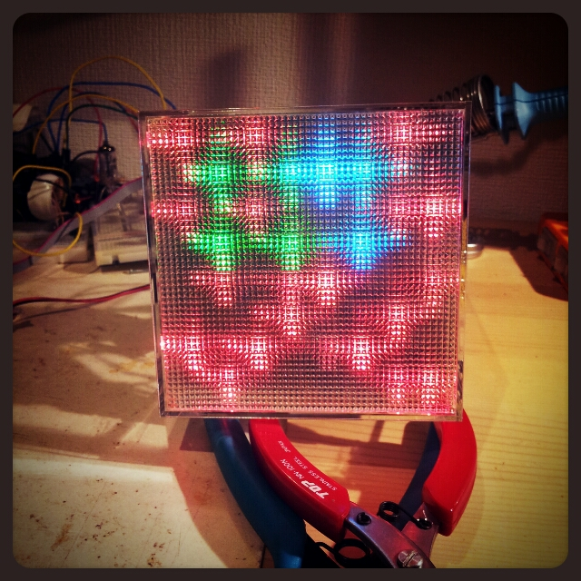
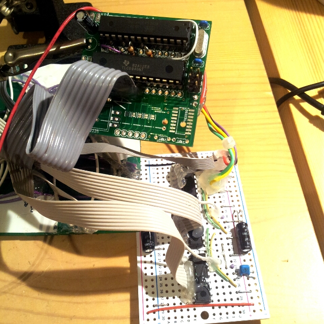
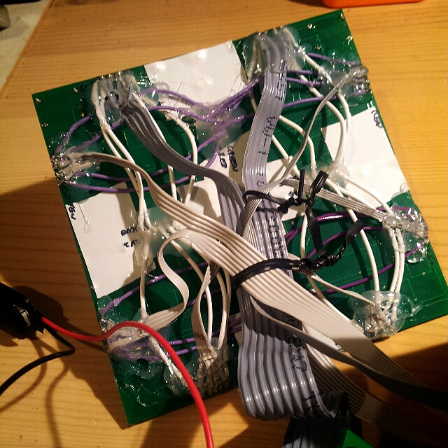
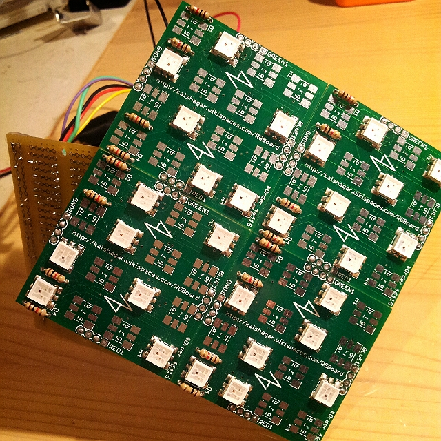

Avalanche a la Ikea
It was some stuff I saw in Ikea in France (means 8-10 years ago). It was a board, with bi-color red-blue leds array quite big, inside a semi-opaque white frame, and some leds were turning slowly on or off one by one, somewhere like in the game of life ... but quite slow. I found it so cool and wanted one but never made the step. Now I'm a full grown geek and I can make my own :P
This project will use the
RGBoard, which is in fact the main
raison d'etre of the board. The board is poorly designed, with big flaws but after a few acrobatic soldering it can do the job.
- PWM is done with a TLC5940 that drives the 8 ground pins (8 columns of led)
- On/off is done by 3x 74HC595 in serial, each driving 8 rows, one SIPO per color
Technical links

The assembled version with a 10x10cm diffraction plastic layer
|

- On the left: the green board with a Atmega 328 and a TLC5940 10 bits PWM controlling the GND of the leds
- On the right: the white board with 3x SIPO 8bits registers 74HC595 in serial, one for each color
|

The wiring mess, with acrobatic soldering and lots and lots of glue to keep everything together.
|

The led solder face. On purpose some leds are not present to not have a regular pattern. And save cash.
|